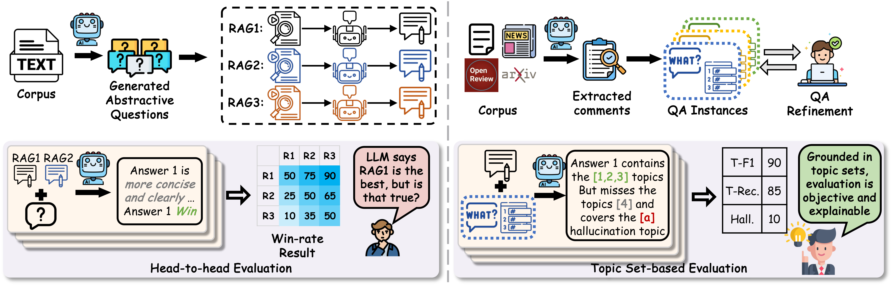

ASTRA-QA Benchmark
Overview

ASTRA-QA is a benchmark for abstract QA over documents, with a focus on evaluating RAG methods. Unlike conventional QA benchmarks that emphasize short answers or extractive evidence lookup, ASTRA-QA is designed to evaluate whether a RAG system can synthesize information from long documents and produce responses that are coherent, selective, and faithful to the source content. Such questions commonly require document-level summaries, structured comparisons, thematic organization, and temporally grounded synthesis rather than isolated factual snippets. ASTRA-QA is built over two source domains, namely academic papers and news documents, and covers five abstract question types.
Formally, ASTRA-QA consists of a document corpus \(D\) and a set of QA instances. Each QA instance is represented as \((Q, A, H, M)\), where \(Q\) is an abstract question, \(A = \{\tau_1, \tau_2, \cdots, \tau_n\}\) is the answer topic set, \(H = \{h_1, h_2, \cdots, h_k\}\) is a curated hallucination set containing plausible but unsupported topics, and \(M\) denotes the associated metadata, including the aligned evidence set \(E\), the question type, and the retrieval scope. Figure 1 provides an example of this representation, showing the question, answer topic set, hallucination set, and metadata of a QA instance. The set \(A\) is constructed from high-level summary signals and used by our topic-based evaluation method to assess answer coverage, while \(H\) records relevant but unsupported topics and is used to assess whether responses include these curated hallucination targets.
Construction Pipeline

ASTRA-QA is constructed through a three-stage construction pipeline. The pipeline converts heterogeneous source materials into abstract QA instances grounded in curated document collections, with reference-grounded evidence and comprehensive topic-set answers.
- Step 1: Data Collection. Original documents are collected from OpenReview, focusing on ICLR 2023, survey papers from arXiv, the tagged corpus of publications of Epstein et al., and news articles downloaded through the mediastack API, forming an initial candidate pool of 700+ paper documents and 1,500+ news articles.
- Step 2: QA Pairs Generation. We use the processed materials, along with type-specific guidance, to generate initial QA instances with an LLM. Specifically, we use GPT-4o throughout the ASTRA-QA construction pipeline for generation and refinement.
- Step 3: QA Pairs Refinement. We refine the generated question and the topic-set answer separately.
| Task Type | #Q | #Docs | Corpus Tok. | AM Tok. | # C |
|---|---|---|---|---|---|
| Single-Sum | 422 | 422 | 9,681,570 | 322,719 | 30 |
| Pair-Comp | 99 | 54 | 1,565,393 | 597,178 | 5 |
| Multi-Comp | 42 | 57 | 1,670,693 | 457,473 | 5 |
| Enum | 150 | 64 | 1,728,257 | 427,368 | 7 |
| Temp | 156 | 1,579 | 1,434,193 | 120,514 | 7 |
| Total | 869 | 2,095 | 16,080,106 | 347,963 | 54 |